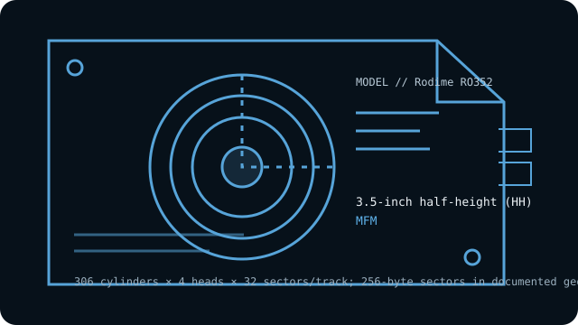

[ INDIVIDUAL COMPONENT // HARD DISK DRIVES ]
Rodime RO352
10 MB-class 3.5-inch half-height MFM drive; early small-form-factor ST-506 design. This entry describes the named model, not every drive with similar markings.

IDENTIFICATION: Record the complete label, suffix, revision and controller details before handling. Do not substitute a related model’s geometry or encoding based on appearance alone.
Model specifications
| Exact model | Rodime RO352 |
|---|---|
| Catalog classification | MFM and early magnetic drives |
| Capacity | 10 MB formatted; check model documentation before comparing unformatted-capacity figures |
| Form factor | 3.5-inch half-height (HH) |
| Interface | ST-506-compatible two-cable interface |
| Recording method | MFM |
| Drive geometry | 306 cylinders × 4 heads × 32 sectors/track; 256-byte sectors in documented geometry |
| Host-controller compatibility | Requires an MFM ST-506 controller capable of the RO352’s 256-byte sectors and 306/4/32 geometry, along with the appropriate two-cable wiring and drive-select setup. Many PC controllers expect 512-byte sectors, so verify compatibility rather than assuming a standard BIOS drive type will work. |
| Historical caveat | Its 256-byte sector format is an important compatibility distinction from the 512-byte sectors common on later PC hard disks. An adapter or BIOS that accepts a superficially similar cylinder/head count may still fail to read the disk correctly. |
Host-controller compatibility
Requires an MFM ST-506 controller capable of the RO352’s 256-byte sectors and 306/4/32 geometry, along with the appropriate two-cable wiring and drive-select setup. Many PC controllers expect 512-byte sectors, so verify compatibility rather than assuming a standard BIOS drive type will work.
- Confirm the full model and revision on the label, controller make/model, cable pinouts, power requirements, drive-select jumpers, and termination before connection.
- Verify that the controller supports the exact encoding, CHS geometry and sector size shown above; controller and BIOS translations can vary between systems.
- Do not attach this drive directly to modern SATA, IDE/ATA, SCSI or USB ports. Any bridge must explicitly support the legacy ST-506/ST-412 signaling and drive format; connector resemblance is not electrical compatibility.
Historical and preservation notes
The RO352 is associated with the early adoption of the 3.5-inch HDD form factor. Capacity labels may distinguish formatted from unformatted space; preserve the manual and exact geometry used by the original host.
These drives are decades old. If data matters, avoid exploratory low-level formatting, repeated power cycling or writes; preserve the original controller settings and seek qualified recovery help for a failing mechanism. Treat any catalog capacity as approximate until the original manual and host configuration are checked.
Sources & further reading
- Rodime RO352 model geometry and setupModel-specific reference for its MFM interface, geometry and sector size.
- Rodime RO352 technical documentation (archival scan)Scanned RO352 technical documentation; check exact revision and configuration against the unit label.
Use the model-specific documentation for the full label and revision. Third-party archival listings are useful cross-references but may summarize a family or use rounded capacity values.